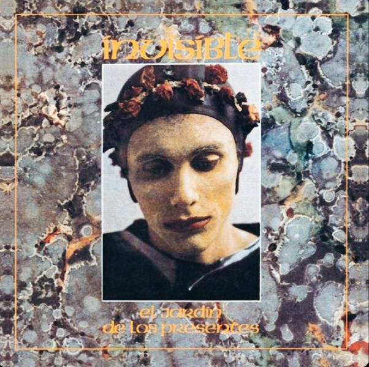
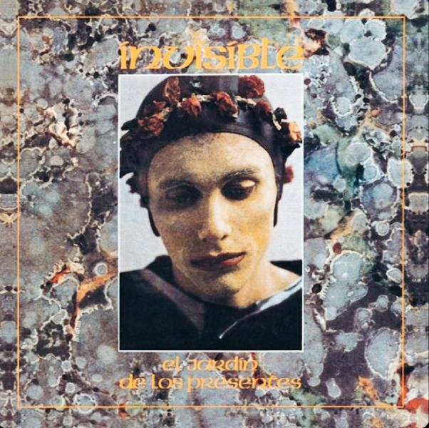

Introducción
Invisible fue una banda de rock argentino liderada por Luis Alberto Spinetta. Surgió tras la disolución de Pescado Rabioso y marcó un nuevo rumbo musical...
Contenido extendido...
Formacion e Integrantes
Formación e Integrantes
El trío original estuvo compuesto por Luis Alberto Spinetta (guitarra y voz), Carlos "Machi" Rufino (bajo) y Héctor "Pomo" Lorenzo (batería). En 1976 se sumó Tomás Gubitsch en guitarra eléctrica.
Contenido extendido...
Estilo Musical
Estilo Musical
Invisible fusionó el rock progresivo con elementos del jazz, la música clásica y el tango. Las letras abordaban temas filosóficos y espirituales con una poética muy cuidada.
Contenido extendido...
Discografía de Invisible
Invisible (1974)
Primer disco de la banda, con sonidos progresivos y letras filosóficas...
Contenido extendido...
Surazno Sangrando (1975)
Primer disco de la banda, con sonidos progresivos y letras filosóficas...
Contenido extendido...
El Jardin de los Presentes (1976)
Primer disco de la banda, con sonidos progresivos y letras filosóficas...
Contenido extendido...
Temas Imprescindibles
Algunas de las canciones más destacadas del grupo incluyen “El anillo del Capitán Beto”, “Los libros de la buena memoria”, “Durazno sangrando” y “Jugo de lúcuma”.
Presentaciones en Vivo
Invisible ofreció conciertos inolvidables en el Teatro Coliseo, el Luna Park y otros escenarios clave del rock nacional, donde desplegaban un sonido impecable y visuales innovadores para la época.
Disolución y Legado
La banda se disolvió en 1977, pero su influencia perdura. Fue clave en la evolución del rock argentino y consolidó a Spinetta como una figura central en la historia musical del país.

 
